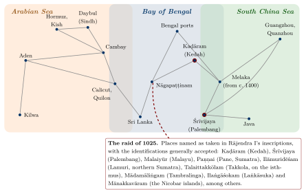
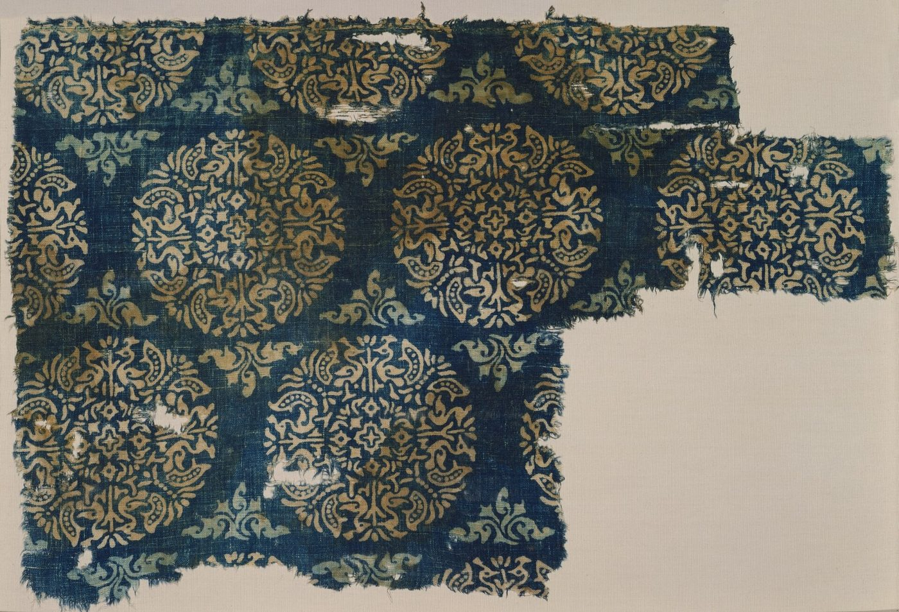

Chapter 12: The Indian Ocean World, c. 600–1500¶
Chapter Overview
Between the rise of Islam and the arrival of the Portuguese, the Indian Ocean was crossed by a dense web of trade linking East Africa, Arabia, Iran, the coasts of India, Sri Lanka, Southeast Asia and China. No single people or state controlled it. This chapter introduces its main participants in turn: Arab and Persian merchants of the Gulf, the Arab ports of Sindh, the merchants of Gujarat, the Muslim Māppiḷas of Malabar and the Kārimī merchants of Egypt, the Jewish traders known from the Cairo Geniza, the Tamil merchant associations, the island of Sri Lanka, Chinese shipping from the Song to the voyages of Zheng He, the shippers of Śrīvijaya and Java, and the towns of the Swahili coast. It then looks at the Chola expeditions of the eleventh century, at the main goods of the trade (horses, pepper, textiles, gems and cowries), and at the religions that travelled with merchants.
The earlier history of seaborne trade, from the Harappans to the Indo-Roman trade, is treated in Chapter 11. The ships themselves are the subject of Chapter 13, the monsoon and the pilots’ craft of Chapter 14, and the port cities, their officials and the customs of the sea of Chapter 15. The cultural history of India’s links with Southeast Asia is treated in Chapter 16, and the period after 1498 in Chapter 18.
The sources for these nine centuries are richer, and more varied, than for any earlier period. They include Arabic and Persian geographies and travel accounts; the letters of Jewish merchants preserved in the Cairo Geniza; Chinese dynastic histories, trade gazetteers and the reports of Zheng He’s interpreters; Tamil, Kannada, Sanskrit and Old Malay inscriptions; the accounts of Marco Polo and Ibn Baṭṭūṭa; and a growing body of archaeology, including shipwrecks and textiles excavated in Egypt. Each was written from a particular point of view. Arabic writers saw the ocean from the Gulf, Chinese officials from the customs house, and the court poets of the Cholas from the throne. Putting them together shows an ocean with many centres, not one.
12.1 An Ocean of Many Centres¶
The historian K. N. Chaudhuri argued that the Indian Ocean between the seventh and the eighteenth centuries can be studied as a single economic and cultural space, held together by the regular alternation of the monsoon winds, by a recurring set of goods, and by shared commercial practices among merchants of many faiths (Chaudhuri 1985, 1990). Within that space he distinguished three overlapping circuits (Figure 12.1): the Arabian Sea, linking East Africa, the Red Sea and the Gulf to western India; the Bay of Bengal, linking eastern India and Sri Lanka to Burma, the Malay peninsula and Sumatra; and the South China Sea, linking the Straits to China. India’s long coastline lay where the first two met, which is why its ports were busy. But the system had no single hub. Aden, Hormuz, Cambay, Calicut, Quilon, Nāgapaṭṭinam, Palembang, Malacca, Quanzhou and Kilwa each served as an emporium for its own region, and the balance between them shifted over time (McPherson 1993; Pearson 2003; Alpers 2014).
One important change in the structure of the trade is generally placed around the eleventh century. In the ninth century Arabic sources describe ships sailing from the Gulf all the way to southern China and back, a voyage that took the better part of two years. Later, voyages tended to be divided into segments: goods from the Gulf or the Red Sea were sold in Gujarat or Malabar, carried on from there to the Straits, and handed on again to ships bound for China. Chaudhuri linked this segmentation to the rise of emporia that could store goods between monsoons and to the rhythms of the winds themselves (Chaudhuri 1985). Janet Abu-Lughod, writing of the thirteenth and fourteenth centuries, similarly described a chain of linked circuits, none of which dominated the others (Abu-Lughod 1989).

Most of the people who made this system work have left no names: the sailors, porters, caulkers, weavers, pepper growers, divers and enslaved men and women whose labour underlay the trade. The merchants and rulers who appear in the sources were a small minority, and the sections that follow should be read with that in mind. Table 12.1 gives selected dates for the period.
| Date (CE) | Event |
|---|---|
| 671–695 | The Chinese monk Yijing travels between China and India by sea, staying at Śrīvijaya |
| 680s | Old Malay inscriptions of Śrīvijaya near Palembang and on Bangka |
| c. 830s | Approximate date of the Belitung wreck (Indonesia), a sewn-plank ship carrying Chinese ceramics |
| 849 | Copper plates of Tarisāppaḷḷi (Quilon) grant privileges to a Christian church and name the Maṇigrāmam and Añjuvaṇṇam |
| 851 | Akhbār al-Ṣīn wa-l-Hind describes the sea route from the Gulf to China |
| c. 993 | Rājarāja I’s forces take northern Sri Lanka |
| c. 1006 | Grant for the Buddhist monastery built at Nāgapaṭṭinam by the Śailendra king of Śrīvijaya (Larger Leiden plates) |
| 1025 | Rājendra I’s naval raid on Śrīvijaya and its ports |
| 1087 | Song China establishes a maritime trade office at Quanzhou |
| 1088 | Tamil inscription of the merchant association of the “Five Hundred” at Barus, Sumatra |
| c. 1132–1149 | Abraham Ben Yijū, a Jewish merchant from Tunisia, lives and trades at Mangalore |
| 1264 | Arabic–Sanskrit inscription at Somanātha records a mosque founded by a shipowner from Hormuz |
| 1281 | Tamil inscription at Quanzhou records a Śiva temple |
| 1340s | Ibn Baṭṭūṭa at Calicut and in the Maldives |
| 1405–1433 | The seven Ming voyages of Zheng He |
| c. 1400 | Foundation of Malacca |
| 1498 | Arrival of Vasco da Gama at Calicut (Chapter 18) |
12.2 Arab and Persian Merchants of the Gulf¶
The foundation of Baṣra in the 630s and of Baghdad in 762 created a vast new market for the goods of the ocean at the head of the Persian Gulf. Through the eighth to tenth centuries the most important Gulf port for the long-distance trade was Sīrāf on the Iranian coast, with Ṣuḥār in Oman as a second centre; ships from both sailed to western India, Sri Lanka, Southeast Asia and southern China (Hourani 1995). Merchants, captains and sailors were Arabs, Persians, Indians and others, and the language of the sea was mixed: many of the nautical terms in later Arabic pilot guides are of Persian origin (Tibbetts 1971).
Two Arabic texts give a vivid view of this world, though both must be read with care. The Akhbār al-Ṣīn wa-l-Hind (“Accounts of China and India”), compiled in 851, describes the route from the Gulf by way of Quilon (which it calls Kūlam Malī) and the Bay of Bengal to Guangzhou, the customs of Chinese and Indian rulers, and the goods traded. It was long attributed to a merchant named Sulaymān, an attribution now doubted. Around 916 Abū Zayd al-Sīrāfī added a sequel, which reports that the trade with China was disrupted when the rebel Huang Chao sacked Guangzhou in 878–79 and killed many of its foreign merchants. The ʿAjāʾib al-Hind (“Wonders of India”), associated with a ship’s captain named Buzurg ibn Shahriyār and dated to the mid-tenth century, collects sailors’ stories of storms, shipwrecks, marvels and the kings of distant coasts; its authorship and the reliability of individual tales are uncertain, and it is best read as evidence of what seafarers talked about rather than as a record of events (Hourani 1995).
Arabic geographers of the ninth and tenth centuries, including Ibn Khurradādhbih and al-Masʿūdī (who visited western India in the early tenth century), describe the Rāṣṭrakūṭa king, whom they call the Balharā (from Sanskrit vallabha-rāja), as the greatest ruler of India and a friend to Muslim merchants. They report that Muslim communities in the ports of the western coast lived under their own headmen and practised their religion freely (Wink 1990). This is an early example of a pattern that runs through the whole period: coastal rulers, whatever their religion, protected foreign merchants because their trade brought customs revenue, luxury goods and, increasingly, war-horses.
The Gulf ports themselves rose and fell. Sīrāf declined after an earthquake in the late tenth century and the shift of trade towards the island of Kish (Qays), whose rulers dominated the Gulf trade in the eleventh and twelfth centuries. From the thirteenth century the leading port was Hormuz, whose rulers moved their town from the mainland to the island of Jarun around 1300. Hormuz remained the main outlet for Iranian and Iraqi trade to India until the Portuguese took it in 1515, exporting horses, pearls, dates, silver and other goods and importing Indian textiles, spices, rice and sugar (Chaudhuri 1985; Wink 1990). The ships that carried this trade, built of planks sewn together with coir cord, are described in Chapter 13.
12.3 Sindh: Daybul, Manṣūra and Multan¶
The lower Indus, the stretch of the Indian coast nearest to the Gulf, was the first part of South Asia to come under Muslim rule. In 711–712 an Umayyad army under Muḥammad ibn al-Qāsim took the port of Daybul and went on to conquer Sindh as far as Multan. The Arabic historians give as the occasion the seizure off Daybul of ships carrying Muslim women and gifts from Sri Lanka to the governor of Iraq, al-Ḥajjāj; whatever its truth, the story is a reminder that the province’s first importance to the caliphate was maritime (Wink 1990).
Under the governors of the caliphs and then local Arab dynasties, Sindh became a frontier province whose towns the Arabic geographers of the tenth century describe: Daybul at the mouths of the Indus, the port of the province; al-Manṣūra, the capital founded near the older town of Brahmanabad; and Multan in the upper Indus valley, whose great temple of the Sun drew pilgrims and offerings and whose Muslim rulers, according to these writers, used the threat to destroy its image to deter Hindu attack. In the second half of the tenth century Multan passed to Ismāʿīlī rulers allied with the Fatimids of Egypt, until Maḥmūd of Ghazna took it in the early eleventh century. Through these towns the Indus valley, and the routes from Khurasan and Kabul that met at Multan, were linked with the Gulf ports. The site of Banbhore, on a creek east of Karachi, excavated from 1958, has revealed a fortified port town with one of the earliest known mosques of South Asia, and it is often identified with Daybul, though the identification is not certain.
Derryl MacLean’s study of Arab Sindh shows a society in which Muslims long remained a minority, Buddhist and Hindu communities and merchants persisted, and conversion was gradual and bound up with trade and with the patronage of the new rulers (MacLean 1989); André Wink treats the province as the western gateway of what the Arabic sources called al-Hind (Wink 1990). The shifting channels of the Indus later left Daybul behind. In the Mughal period the ports of the delta were Lahari Bandar and the city of Thatta, where the English Company kept a factory for a time in the seventeenth century.
12.4 Gujarat and the Port of Cambay¶
On the western Indian side, the coast of Gujarat was the most important commercial region for most of this period. Its ports, above all Cambay (Khambhāt, Arabic Kanbāya) at the head of its gulf, but also Bharuch, Somanātha-Pattan, Diu and Bhadreśvar in Kachchh, drew on a large and productive hinterland. Gujarat exported cotton cloth, indigo, carnelian and agate beads, and the products of the interior, and imported horses, metals, precious goods and bullion. Al-Masʿūdī already describes Cambay in the early tenth century; under the Caulukya (Solaṅkī) kings of Aṇahilapāṭaka (c. 940–1244) and their Vāghelā successors it became one of the greatest emporia of the ocean, a position it kept under the Delhi Sultanate (from 1299–1304) and the independent sultans of Gujarat (from 1407) (Chakravarti 2002; Wink 1990).
The merchants of Gujarat were of many communities. Hindu and Jain vaṇiks (banias) dominated wholesale trade, money-lending and brokerage. Jain narrative literature of the thirteenth and fourteenth centuries celebrates merchant-ministers such as Vastupāla, who served as governor of Cambay under the Vāghelās, and Jagaḍū of Bhadreśvar, who is said to have traded with Hormuz and to have relieved a famine in the 1250s with grain from his own stores; these works are literary portraits rather than accounts, but they show that seaborne trade carried prestige in Jain society. Among Muslims, there were long-established communities of Arab and Persian descent, and later converted communities such as the Bohras, Ismāʿīlīs whose tradition traces their conversion to missionaries of the eleventh century, and the Khojas, followers of the Nizārī Ismāʿīlī preachers of the later medieval period (Pearson 1976).
A bilingual Arabic and Sanskrit inscription of 1264 from Somanātha-Pattan shows how these communities lived together. It records the building of a mosque by Nūr al-Dīn Fīrūz, a shipowner (nākhudā) from Hormuz, on land acquired in the town with the agreement of local notables, in the reign of the Vāghelā king Arjunadeva, and it provides an endowment from local property for the mosque’s upkeep (Thapar 2004; Chakravarti 2002). Less than three centuries after Maḥmūd of Ghazna’s raid on the Somanātha temple, a Hormuzi shipowner was endowing a mosque in the same town with Hindu cooperation. Trade did not erase conflict, but it gave rulers and merchants strong reasons to accommodate one another.
By the fifteenth century Gujarati merchants were found in every major port from Aden to Malacca. Writing in Malacca shortly after the Portuguese conquest of 1511, the Portuguese apothecary Tomé Pires described Cambay as stretching out two arms, one to Aden and one to Malacca, and gave the Gujaratis a leading place among the foreign merchants of the Straits (Pires 1944). His testimony comes from just after our period, but it describes a network that had grown over the previous two centuries.
12.5 Malabar, Aden and the Merchants of Egypt¶
The Malabar coast of Kerala was the world’s main source of black pepper and an important source of ginger and cardamom. Its ports changed over time: Kollam (Quilon) was prominent from the ninth century, and the kingdom of the Cēra Perumāḷs of Mahōdayapuram dominated the coast until the early twelfth century. After their decline, a number of smaller kingdoms competed for trade, and from the thirteenth century Calicut (Kozhikode), under the rulers known as the Sāmūtiri (Zamorin), became the leading port. Its reputation rested on the security it offered to merchants of all origins (Prange 2018; Malekandathil 2010).
Foreign merchants were firmly established in Malabar before 1000. The Tarisāppaḷḷi copper plates of Quilon (849), witnessed in Arabic, Middle Persian and Judaeo-Persian, and the Jewish copper plates of Cochin (c. 1000), which grant the Añjuvaṇṇam to Joseph Rabban, are described in Section 4.7; they show Christian, Jewish and Muslim merchants of West Asian origin settled under Hindu kings and integrated into the local system of corporate privileges (Malekandathil 2010; Champakalakshmi 1996).
The Muslim communities of Malabar, known as Māppiḷas, grew out of such settlement and intermarriage, and from local conversion. A later tradition, recorded in the sixteenth-century Arabic chronicle Tuḥfat al-Mujāhidīn, tells of a Cēra king who converted to Islam and travelled to Arabia; it is a legend of origins rather than history. Sebastian Prange has shown how Islam in medieval Malabar was shaped by trade: Friday mosques were endowed by merchants and protected by Hindu rulers, Islamic law and Arabic learning circulated through networks linking Malabar to Yemen, Egypt and the Gulf, and Muslim merchants acted as intermediaries between the pepper-growing interior and the ships of the ocean (Prange 2018). Ibn Baṭṭūṭa, who passed through Malabar several times in the 1340s, describes the mosques and Muslim merchants of its ports, the Hindu rulers who governed them, and the Chinese ships that called at Calicut and Quilon (Ibn Baṭṭūṭa 1958).
On the other side of the Arabian Sea, Aden was the main gateway to the Red Sea and Egypt. Roxani Margariti’s study of the port under its Zurayid and Ayyubid rulers, from the late eleventh to the early thirteenth century, shows a well-regulated harbour with officials, brokers and merchants’ representatives serving several communities, and a customs house that taxed and recorded ships from India, East Africa and Egypt (Margariti 2007). Aden kept this role under the Rasulid sultans of Yemen (1229–1454). From Aden goods went up the Red Sea to Egypt. In Egypt from the twelfth to the fifteenth century a group of wholesale merchants known as the Kārimīs specialised in the trade in pepper and spices between Aden and Cairo and Alexandria, where Venetians and Genoese bought for Europe. The Kārimīs became wealthy and influential under the Mamluk sultans, but declined after Sultan Barsbāy imposed state control over the pepper trade in the 1420s and 1430s (Chaudhuri 1985; Margariti 2007).
12.6 Jewish Merchants and the Cairo Geniza¶
The richest documentary evidence for the medieval India trade comes from an unexpected place. The Jewish community of Fusṭāṭ (Old Cairo) did not destroy written documents bearing the name of God but deposited them in a storeroom, the geniza, of the Ben Ezra synagogue. Over centuries, letters, accounts, contracts and legal records accumulated there, most from the eleventh to the thirteenth century. When scholars recovered them in the 1890s, they found among them hundreds of documents concerning trade with India. The historian S. D. Goitein spent decades collecting and translating this “India Book”, which was completed and published by Mordechai Friedman (Goitein and Friedman 2008).
The Geniza letters show Jewish merchants from Egypt, Tunisia, Spain and Yemen travelling to India, generally by way of Aden, and working with Muslim, Hindu and Jain partners and shipowners. They traded in pepper, cardamom, ginger and other spices, in iron and steel, in brass and bronze vessels, in textiles, timber, lac, indigo and medicinal plants, and sent to India gold, silver, copper, coral, glass, paper, textiles and household goods. Their commercial arrangements included partnerships, commenda-type agreements in which one party supplied capital and another travelled with the goods, bills of credit, and an informal system of mutual services between merchants that Goitein called “formal friendship” (Goitein and Friedman 2008). These practices were common to Jewish and Muslim merchants of the time; they are discussed further in Chapter 6.
Historical Note: Abraham Ben Yijū at Mangalore
The best-documented merchant in the India Book is Abraham Ben Yijū, a Jew from al-Mahdiyya in Ifrīqiya (modern Tunisia). He travelled by way of Egypt and Aden to India, where he lived from the early 1130s until about 1149, mostly at Mangalore on the Kanara coast. There he ran a workshop producing bronze vessels, exported pepper and other goods to Aden, and corresponded with his partner and patron in Aden, Maḍmūn ibn Ḥasan, a leading merchant and head of the Jewish community there. In India he freed and married a local woman named Ashū, who had been his slave, and had children with her; his business agent was a slave named Bomma, apparently from the Tulu-speaking coast. After leaving India Ben Yijū lived in Aden and later in Egypt (Goitein and Friedman 2008). The writer Amitav Ghosh used Ben Yijū’s papers, and the fragmentary traces of Bomma, as the framework for In an Antique Land, a book that is both history and memoir (Ghosh 1992). Elizabeth Lambourn has reconstructed the household goods he took with him when he left India, from a list among his papers (Lambourn 2018). Ben Yijū’s life shows how close the commercial and personal ties across the ocean could be, and how they could rest on slavery.
The Geniza merchants were not the only Jewish traders in the Indian Ocean. Ibn Khurradādhbih, in the ninth century, describes Jewish merchants called Rādhānites who traded between the Mediterranean and China by land and sea, and the Jewish community of Malabar is attested by the copper plates of around 1000 noted above. Later, after our period, Armenian merchants built networks that reached from Iran to India and Southeast Asia (Chapter 18).
12.7 Tamil Merchant Associations Abroad¶
In south India, long-distance trade was organised through merchant associations that are known mainly from inscriptions. The two most important were the Maṇigrāmam, attested from the ninth century, and the association that called itself the “Five Hundred” (Tamil Ainnūṟṟuvar) of Ayyāvoḷe (Aihoḷe in Karnataka), whose records begin in the ninth and tenth centuries and become very numerous in the eleventh to thirteenth (Abraham 1988; Champakalakshmi 1996). The Five Hundred described themselves in a long formulaic eulogy as followers of a merchant code (vīra-baḷañja-dharma), worshippers of the goddess Bhagavatī, and travellers through many lands. Their inscriptions mention allied bodies of itinerant merchants (nānādeśi), local merchant groups (nagaram), and armed men who protected caravans and markets. They were not guilds in the European sense with fixed membership and monopolies, but loose, overlapping associations that guaranteed trust, settled disputes and negotiated with rulers. Their organisation within India is treated in Chapter 4; here we follow them overseas.
Their inscriptions have been found across the Bay of Bengal. At Takuapa on the west coast of the Thai–Malay peninsula a Tamil inscription of the ninth century records the digging of a tank placed under the protection of the Maṇigrāmam and of a military camp. In Sri Lanka, especially during and after the Chola occupation, many inscriptions of the Five Hundred record their settlements and donations. At Lobu Tua near Barus on the west coast of Sumatra, a port famous for camphor, a Tamil inscription dated Śaka 1010 (1088 CE) records a decision of an assembly of the “Five Hundred of the thousand directions” in the town. In Pagan (Burma) a Tamil inscription of the thirteenth century records a Viṣṇu temple associated with the Nānādeśi merchants (Hall 1980; Abraham 1988; Kulke et al. 2009).
The most distant evidence comes from China. At Quanzhou, the great port of Song and Yuan China, a Tamil inscription dated 1281 records the consecration of a Śiva temple under the authority of the Mongol emperor, and a large number of carved stone fragments from Hindu temples, including images of Viṣṇu and Śiva and scenes from Kṛṣṇa legends, have been found in the city, some reused in the Kaiyuan Buddhist monastery (Sen 2003). Tamil merchants thus maintained a community with its own shrine at the far end of the maritime route in the thirteenth century, alongside the Arab, Persian and other foreign communities whose mosques and tombstones survive in the same city.
The inscriptions record what associations chose to commemorate, usually gifts and agreements; they rarely tell us about the goods, the ships or the profits, and they do not show that the associations controlled any territory. Kenneth Hall and Meera Abraham have shown how closely the activity of these associations was tied to the temple-centred economy of the Chola country and to Chola royal policy, but also that they operated in kingdoms well beyond Chola control (Hall 1980; Abraham 1988).
12.8 Sri Lanka between Two Seas¶
Sri Lanka lies just off the southern tip of the peninsula, where the routes of the Arabian Sea and the Bay of Bengal meet. The shallow Palk Strait and the shoals of Adam’s Bridge could be crossed only by small craft, so that larger ships passing between the western and eastern coasts of India had to round the island, and its harbours — Mantai opposite the island of Mannar in the north-west, Puttalam and Colombo on the west coast, and Galle in the south — were natural places to wait for the monsoon and to exchange cargoes. The island’s own products, gems, pearls from the Gulf of Mannar, elephants, and later cinnamon, added to its attraction. Its earlier history as a meeting point of Roman, Indian and other traders is outlined in Chapter 11.
Cosmas Indicopleustes.
The fullest early description of the island’s place in the trade comes from the Christian Topography of Cosmas, a Greek-speaking merchant of Alexandria turned monk, written around the middle of the sixth century. In its eleventh book Cosmas describes Taprobane as a great mart that received silk, aloeswood, cloves and sandalwood from China and the lands to the east, and sent them on to Male (Malabar, “where the pepper grows”), to Kalliana (Kalyāṇa, near modern Mumbai), to Sindh, Persia, Yemen and the Red Sea port of Adulis, while itself receiving goods from all these places. He reports a church of Persian Christians on the island, with a priest and a deacon appointed from Persia, and says that the island had two kings, one of whom held the region of the gems and the other the part with the harbour and the mart. He also tells the story of a Roman merchant, Sopatros, who at the court of a Sinhala king set a Roman gold coin beside a Persian silver one and persuaded the king that the Romans were the greater power (Cosmas Indicopleustes 1897). Whether Cosmas himself visited the island is uncertain, and the Sopatros story is an edifying anecdote rather than a record; but his account of the island as a meeting place for ships from east and west fits the archaeological evidence.
Mantai.
The most important port of the Anurādhapura kingdom was Mantai, called Mahātittha in the Pali chronicles and Mātoṭṭam in Tamil, on the mainland of Sri Lanka opposite Mannar. Occupied from the late centuries BCE, it served as the port of the capital, Anurādhapura. Excavations at the site have produced Chinese ceramics, glazed pottery from Iraq and Iran, and glass, evidence of trade with both ends of the ocean in the later first millennium CE (Ray 2003). Nearby stood the Śiva temple of Tirukkētīśvaram, celebrated in the Tamil Śaiva hymns of the seventh and eighth centuries, a sign of the Tamil presence in the port. Mantai declined in the eleventh century, after the Chola conquest of the north and the move of the Sinhala capital to Polonnaruva (Section 12.9.1), and the island’s trade shifted to its western and southern harbours.
Sinhala kings and the sea.
The Sinhala chronicles, the Mahāvaṃsa and its continuation the Cūḷavaṃsa, were written by Buddhist monks and say little about trade, but the kings evidently drew revenue from ports and from the pearl fishery, and maintained relations across the Bay of Bengal. The Cūḷavaṃsa records that Parākramabāhu I (r. 1153–1186) sent an expedition against Rāmañña in Lower Burma, explaining it by the Burmese king’s ill-treatment of Sinhala envoys and his interference with the island’s trade, including a trade in elephants (Geiger 1929). The account is one-sided and its details cannot be checked, but it shows a Sinhala court concerned with commerce and diplomacy across the Bay. The religious ties between Sri Lanka and Pagan are discussed in Chapter 16 (Hall 2011).
Muslims, Tamils and Chinese.
Arabic writers called the island Sarandīb, and Muslim merchants settled in its western ports. A mountain in the interior, known in English as Adam’s Peak, was a place of pilgrimage for several religions: Buddhists venerated a footprint on its summit as the Buddha’s, Hindus as Śiva’s, and Muslims as Adam’s. Ibn Baṭṭūṭa, who landed on the west coast in 1344, describes the cinnamon gathered there, which merchants from Malabar and Maʿbar took away in return for gifts of cloth to the ruler; he was received by the Tamil ruler of the north, whom he calls Ayrī Shakarwatī (Āriya Cakravarti, of the kingdom of Jaffna), a man rich in pearls with ships of his own, before climbing Adam’s Peak and travelling to Galle and Colombo (Ibn Baṭṭūṭa 1958). Tamil merchant associations had been active on the island since the Chola period (Section 12.7), and Tamil-speaking Muslims of the Coromandel coast traded to its ports (Chapter 17). At the end of our period the island was drawn into Ming diplomacy: besides the trilingual inscription at Galle (Section 12.10), Zheng He’s fleet fought the Sinhala ruler Alagakkonāra in 1411, took him captive and carried him to China, where the emperor later released him (Dreyer 2007). Sri Lanka thus remained, as Cosmas had described it, a place where the ships and merchants of many nations met, and where control of ports and harbours mattered to every ruler who claimed the island.
12.9 The Chola Expeditions¶
The Chola kings of the Kāverī delta (from the mid-ninth century to 1279) are the only south Indian dynasty known to have sent armed expeditions across the Bay of Bengal. Their naval activity has often been described as a maritime empire or as “Indian Ocean dominance”. The evidence supports a narrower and more interesting picture: a series of conquests in Sri Lanka and the islands, one major raid across the Bay in 1025 and perhaps a second in the 1060s, and a long diplomatic and commercial relationship with Śrīvijaya and China, in which war was the exception rather than the rule.
12.9.1 Sri Lanka and the Islands¶
Rājarāja I (r. 985–1014) conquered northern Sri Lanka around 993, sacked Anurādhapura and made Polonnaruva the seat of a Chola province. His Tamil praise-preface (meykkīrtti) also claims the conquest of the “twelve thousand ancient islands” of the sea, usually taken to mean the Maldives and perhaps the Lakshadweep islands. His son Rājendra I (r. 1012/14–1044) completed the conquest of Sri Lanka around 1017–18 and captured its king. Chola rule in the island lasted until about 1070, when Vijayabāhu I drove the Cholas out (Nilakanta Sastri 1955; Spencer 1983). The Sri Lankan campaigns were wars of conquest across a narrow strait, with long occupation; they gave the Cholas control of ports such as Mantai (Mātoṭṭam) and of the pearl fisheries of the Gulf of Mannar.
12.9.2 Śrīvijaya: Friendship and Raid¶
Relations with Śrīvijaya, the Malay kingdom based in southeast Sumatra that controlled much of the trade of the Straits, began peacefully. The Larger Leiden plates record a grant of revenue from the village of Āṉaimaṅgalam made by Rājarāja I in about 1006, and confirmed by Rājendra I, to a Buddhist monastery at Nāgapaṭṭinam built in the name of Cūḷāmaṇivarman by his son Māravijayottuṅgavarman, the Śailendra king of Śrīvijaya and Kaṭāha (Kedah). A Sumatran king was thus building a Buddhist monastery in the principal Chola port, with Chola endowment, presumably for the use of his subjects who traded there (Nilakanta Sastri 1955; Kulke et al. 2009).
In 1025 this relationship broke down. The main evidence is Rājendra I’s Tamil meykkīrtti, which appears in his inscriptions from about 1025/26 onward. It states that he sent ships across the sea, seized the king of Kaḍāram (Kedah), Saṅgrāmavijayottuṅgavarman, with his elephants and treasure, and took a jewelled gateway (the vidyādhara-toraṇa) and a series of named places: Śrīvijaya, Paṇṇai, Malaiyūr, Māyiruḍiṅgam, Ilaṅgāśokam (Laṅkāsuka), Māppappāḷam, Mēviḷimbaṅgam, Valaippandūru, Talaittakkōlam, Mādamāliṅgam, Ilāmuridēśam (Lamuri in north Sumatra), Mānakkavāram (the Nicobars) and Kaḍāram itself. Most of these places have been identified with ports in Sumatra, the Malay peninsula and the islands of the Bay (Nilakanta Sastri 1955; Kulke et al. 2009). The great Sanskrit and Tamil copper-plate charters of Rājendra’s reign, the Tiruvālaṅgāḍu and Karandai plates, set out the dynasty’s official genealogy and its account of its wars. No Southeast Asian source describes the raid, and there is no archaeological evidence of Chola occupation in the region.
The list of ports reads as a single sweep along the trade routes of the Straits, striking at the entrepôts through which Śrīvijaya controlled the trade, and the expedition seems to have been a raid rather than a conquest. Śrīvijaya continued to send missions to China, and Chola inscriptions do not show any administration overseas. A later Chola king, Vīrarājendra (r. 1063–1070), claims in an inscription to have conquered Kaḍāram and restored it to a king who had sought his protection, which suggests intervention in a local dispute in the 1060s (Nilakanta Sastri 1955; Spencer 1983).
Debate: Why did Rājendra raid Śrīvijaya?
Historians have proposed several motives, which are not mutually exclusive.
-
Commercial. K. A. Nilakanta Sastri suggested that Śrīvijaya was obstructing Chola trade with China, perhaps through heavy tolls in the Straits, and that the raid aimed to remove the obstruction (Nilakanta Sastri 1955). Kenneth Hall linked it to the interests of the Tamil merchant associations (Hall 1980). No source, however, records tolls or a quarrel over trade.
-
Plunder and prestige. George Spencer argued that Chola expansion in general was driven by the search for booty and glory, which kings redistributed through temples and to their followers, and that the Śrīvijaya raid fits the pattern of Chola raiding in the Deccan and on the Ganga (Spencer 1983).
-
Diplomacy and the China trade. Tansen Sen and Hermann Kulke have pointed to competition for access to the Song court, where the status of a “tributary” mission brought trading privileges. Song records at one point describe the Chola kingdom as subordinate to Śrīvijaya, apparently reflecting what Śrīvijayan envoys told the court, and the raid may have been a response to rivalry of this kind (Sen 2003; Kulke et al. 2009).
Most recent writers agree that the expedition was a single, spectacular raid with no lasting territorial result; of its scale and logistics the inscriptions say nothing specific. The places they name are shown in Figure 12.1.
12.9.3 Chola Missions to China¶
Chinese sources record several Chola missions to the Song court between 1015 and 1077. These missions brought pearls, ivory, rhinoceros horn, textiles and aromatics, received gifts in return, and gave the merchants who accompanied them the right to trade. Tansen Sen has argued that they should be read mainly as commercial ventures in diplomatic form, organised by or with merchants, rather than as evidence of a close political relationship (Sen 2003). The trade through Nāgapaṭṭinam and other Coromandel ports continued after the end of Chola power; in the thirteenth century the Pāṇḍya coast, which Arabic and Persian writers called Maʿbar, was the main destination of the Gulf horse trade discussed below.
12.10 Chinese Shipping: From the Song to Zheng He¶
Until about the tenth century most of the long-distance shipping between China and the Indian Ocean was in the hands of West Asian and Southeast Asian merchants and their ships. Chinese officials taxed and regulated foreign trade at Guangzhou, where the Tang had appointed a commissioner for maritime trade, but Chinese ships rarely sailed beyond Southeast Asia. Under the Song dynasty (960–1279) this changed. The Song government, which depended increasingly on customs revenue, set up maritime trade offices at several ports, including Quanzhou in 1087, and Chinese merchants began to build large ocean-going junks with multiple masts, stern-post rudders and hulls divided by bulkheads (Sen 2003; Manguin 1993). Zhao Rugua, an official at Quanzhou, compiled in 1225 a description of foreign countries and their products, the Zhufan zhi, which includes notices of Gujarat, Malabar and the Coromandel coast based on what merchants told him (Zhao 1911).
Under the Mongol Yuan dynasty (1271–1368) Quanzhou, known to Arabic and European writers as Zaitun, was one of the largest ports in the world. Yuan envoys visited Quilon and the Pāṇḍya coast, and Chinese ships sailed regularly to the ports of south India. Ibn Baṭṭūṭa, at Calicut in the 1340s, saw Chinese junks in the harbour and describes them as very large ships with several decks, private cabins for merchants, and crews who grew vegetables and herbs in wooden tubs; he planned to sail to China on one of them, but was left stranded when the junk carrying the embassy he accompanied was wrecked in a storm and the smaller vessel with his belongings sailed without him (Ibn Baṭṭūṭa 1958).
The early Ming emperors restricted private overseas trade but sponsored official expeditions. Between 1405 and 1433 the eunuch admiral Zheng He commanded seven voyages of large fleets into the Indian Ocean. Calicut was the main destination of the first three voyages; later voyages went on to Hormuz, Aden and the East African coast, including Mogadishu and Malindi. The fleets carried tens of thousands of men, according to Ming sources, but the dimensions of the largest “treasure ships” given in later texts are disputed, and Edward Dreyer regards them as exaggerated (Dreyer 2007). The purpose of the voyages was to display Ming power, to bring foreign rulers into the tributary system and to obtain exotic goods, not to establish colonies or to dominate trade. They ended after 1433, when the court lost interest.
The interpreter Ma Huan, a Chinese Muslim who sailed on three of the voyages, describes Calicut in his Yingya shenglan: its Hindu king, its Muslim officials and merchants, its pepper trade, and the brokers who negotiated the prices of cargoes (Ma 1970). A trilingual stone inscription in Chinese, Tamil and Persian, dated 1409 and set up by the Ming envoys at Galle in Sri Lanka, records offerings made to the Buddha, to a Hindu deity and to Allah respectively (Dreyer 2007). Like the Quanzhou finds, it shows a world in which merchants and envoys moved routinely between religious communities.
12.11 Śrīvijaya, Java and the Straits¶
Southeast Asian sailors and merchants were not passive recipients of Indian or Chinese trade. Ships of the Malay world, built of planks edge-joined with wooden dowels and steered with paired quarter rudders, were carrying goods across the South China Sea and into the Bay of Bengal long before 600; Chinese sources call them kunlun bo. Pierre-Yves Manguin has shown that this distinct shipbuilding tradition continued into the large Javanese jong of the fifteenth and sixteenth centuries (Manguin 1993).
The kingdom of Śrīvijaya, centred near Palembang in southeast Sumatra, is first known from Old Malay inscriptions of the 680s and from the account of the Chinese monk Yijing, who stayed there in 671 and again between 687 and 695 to study and copy Buddhist texts. O. W. Wolters argued that Śrīvijaya grew rich by making itself the main entrepôt between the Indian Ocean and China, attracting ships to its ports, supplying Chinese markets with Sumatran resins and forest products as substitutes for West Asian aromatics, and using its fleets to suppress rival ports (Wolters 1967). Its rulers also patronised Buddhism in India, at Nālandā in the ninth century and at Nāgapaṭṭinam in the eleventh (Section 12.9.2; Chapter 16) (Coedès 1968).
After the Chola raid of 1025, power in the Straits shifted between Jambi (Malayu), the Javanese kingdoms of Singhasari and Majapahit (from 1293), and the ports of northern Sumatra such as Samudra-Pasai, whose rulers adopted Islam by the late thirteenth century. Around 1400 a prince from Sumatra founded Malacca on the Malay peninsula. Within a few decades its rulers, who adopted Islam, had made it the principal entrepôt of the Straits, where Gujarati, Tamil (known locally as Keling), Bengali, Javanese, Chinese and Ryukyuan merchants met under the protection of the sultan and his harbour-masters (Pires 1944; Wolters 1999). The cultural and religious history of these kingdoms is treated in Chapter 16.
12.12 The Swahili Coast¶
The western end of the ocean was the East African coast from Somalia to Mozambique. From the eighth century small trading towns developed there, and from the eleventh and twelfth centuries some, such as Mogadishu, Kilwa, Mombasa, Malindi, Pate and Manda, were building in coral stone, with mosques, palaces and merchants’ houses. The people of these towns were Swahili, an African society speaking a Bantu language, Muslim from an early date, with close ties to Arabia, the Gulf and India. Mark Horton and John Middleton stress that Swahili towns were African creations, not Arab colonies, despite later origin legends claiming descent from settlers from Shiraz (Horton and Middleton 2000).
The coast exported ivory, gold, ambergris, tortoiseshell, rock crystal, timber and mangrove poles, and enslaved people; it imported cotton cloth, glass beads, ceramics and metal goods. Kilwa, on an island off southern Tanzania, flourished from the thirteenth to the fifteenth century by controlling the export of gold mined on the Zimbabwe plateau and shipped through Sofala. It minted its own copper coins, and its Great Mosque and the palace of Husuni Kubwa are among the most impressive medieval buildings of the coast. Ibn Baṭṭūṭa visited Mogadishu, Mombasa and Kilwa around 1331 and admired Kilwa as a beautiful and well-built town (Ibn Baṭṭūṭa 1958; Horton and Middleton 2000). Indian cloth and beads, and Chinese porcelain, are common finds in Swahili towns; Indian merchants, mainly from Gujarat and the Konkan, traded on the coast, though permanent Indian settlement there is better documented after 1500.
The ocean’s trade included people. East Africans were enslaved and carried to Arabia, Iraq, Iran and India throughout this period; in ninth-century Iraq enslaved East Africans (the Zanj) rose in a long revolt (869–883). In India, Africans known as Habshīs served as soldiers and officials in several sultanates, and in Bengal Habshī commanders briefly ruled in the 1480s and 1490s. Slavery in the Indian Ocean took many forms, from domestic service to military careers, but it was everywhere a form of coercion (Alpers 2014; Pearson 2003).
12.13 The Goods of the Ocean¶
12.13.1 Horses¶
The climate and pasture of most of peninsular India were unsuitable for breeding large cavalry horses, and Indian armies depended on imports. Horses came overland from Central Asia and Afghanistan to the north (Chapter 10) and by sea from Arabia and the Gulf to the ports of western and southern India. Marco Polo, who passed along the coast of Maʿbar in the 1290s, reports that its kings bought large numbers of horses each year from merchants of Hormuz, Kish, Dhofar, Shihr and Aden, because the horses did not breed well and died quickly in south India (Polo 1903). The Persian historian Waṣṣāf, writing in the early fourteenth century, describes the horse trade from Kish to Maʿbar and the wealth it brought to Gulf merchant families, one of whose members held high office at the Pāṇḍya court. Both writers give large figures for the number and price of horses, but these cannot be checked and should be treated as impressions rather than data (Wink 1990; Digby 1971). The demand continued under the Bahmanī sultans and Vijayanagara in the fifteenth century, and horse imports were one of the main sources of the customs revenue of west-coast ports.
12.13.2 Pepper and Spices¶
Pepper from Malabar was the most important spice of the trade, sold westward to Egypt, Venice and the rest of Europe, and eastward to China, where demand grew strongly under the Song and Yuan. Ginger, cardamom and cinnamon (from Sri Lanka) came from South Asia; cloves, nutmeg and mace came from the Maluku islands of eastern Indonesia and reached India by way of Java and the Straits. Spices were valuable but were only part of a much larger trade in bulk goods. Rice from Kanara and the Coromandel coast fed Malabar, Aden and the Maldives; sugar, cotton, timber, iron and salt moved along the coasts; and much of the shipping consisted of coastal craft carrying everyday goods between neighbouring ports (Chaudhuri 1985; Chakravarti 2002).
12.13.3 Textiles¶
Indian cotton cloth was the most widely traded manufactured good of the ocean. Gujarat, the Coromandel coast and Bengal each produced cloth in many qualities, from coarse cloth for everyday wear to fine muslins and printed and painted fabrics, for markets from East Africa to Indonesia. The most direct evidence comes from archaeology. Excavations at Fusṭāṭ in Egypt have yielded large numbers of fragments of block-printed and resist-dyed cotton made in Gujarat, with radiocarbon dates spread across roughly the tenth to the fifteenth century; the collection in the Ashmolean Museum, Oxford, catalogued by Ruth Barnes, is the best known (Barnes 1997). Figure 12.2 shows a fragment of this kind. At the other end of the ocean, Indian textiles preserved as heirlooms in eastern Indonesia include pieces radiocarbon-dated to the fourteenth century and later, with designs that match the Fusṭāṭ finds (Guy 1998). Cloth was often used in place of money: on the Swahili coast and in parts of Southeast Asia, prices were reckoned in pieces of Indian cloth. Weaving and dyeing are treated in Chapter 8 and in Volume 17, Śilpa–Kāru.


12.13.4 Gems, Pearls and Cowries¶
Sri Lanka was famous for its gems, especially sapphires and rubies from the gravels of the south-west, and the Gulf of Mannar between Sri Lanka and India for its pearls; Marco Polo describes the pearl fishery off the coast of Maʿbar, the divers, and the share of the catch taken by the king (Polo 1903). Diamonds came from the Deccan, and Indian lapidaries cut and polished stones from many sources. The Maldives exported coir rope, dried fish and, above all, cowry shells, which served as small change in Bengal and other parts of eastern India and, by way of Egypt and the Sahara, in West Africa. Ibn Baṭṭūṭa, who lived in the Maldives in the 1340s and served there as a judge, describes the gathering of cowries and their export to Bengal (Ibn Baṭṭūṭa 1958). The use of cowries as currency is discussed in Chapter 5. Table 12.2 summarises the principal goods of the trade.
| Region | Main exports |
|---|---|
| East Africa | Ivory, gold, ambergris, tortoiseshell, mangrove timber, enslaved people |
| Red Sea, Yemen | Coral, frankincense and myrrh; transit of Egyptian and Mediterranean goods |
| Gulf and Iran | Horses, pearls, dates, silver, rose water |
| Gujarat | Cotton cloth (including block-printed cloth), indigo, beads of carnelian and agate |
| Malabar and Kanara | Pepper, ginger, cardamom, rice, teak |
| Coromandel | Cotton cloth, rice |
| Sri Lanka and Gulf of Mannar | Cinnamon, gems, pearls, elephants |
| Maldives | Cowries, coir, dried fish |
| Bengal | Fine cotton cloth, rice, sugar |
| Southeast Asia | Camphor, benzoin and other resins, aromatic woods, tin, gold; cloves and nutmeg from Maluku |
| China | Silk, porcelain, copper coins, iron goods |
12.14 Religion Travels with Trade¶
The ocean carried beliefs as well as goods. In the first part of our period Buddhist monks travelled on merchant ships between India, Sri Lanka, Śrīvijaya and China, and Buddhist monasteries in ports, such as the one at Nāgapaṭṭinam, served merchants as well as monks (Sen 2003; Ray 1994). Hindu temples followed Tamil merchants to Pagan and Quanzhou. Islam spread along the trade routes, carried by merchants, scholars and Sufis, and found protection under non-Muslim rulers in Malabar, Gujarat and Sri Lanka long before Muslim states arose on the coasts. In the Maldives the conversion of the ruler is traditionally dated to 1153, and in northern Sumatra the first Muslim ruler of Samudra-Pasai died in 1297; carved gravestones of this period in Sumatra and Java appear to have been made in Cambay and shipped across the ocean, a small but telling sign of Gujarat’s role (Coedès 1968; Prange 2018). The cultural transmission to Southeast Asia, including the use of Sanskrit and Indian scripts, is treated in Chapter 16.
The Brahmanical law books discouraged sea voyages for members of the higher varṇas (Section 19.12.3), but Hindu and Jain merchants of Gujarat and the south crossed the sea routinely, and the restriction seems to have been applied unevenly, by caste and region, rather than as a universal rule.
12.15 Conclusion¶
India’s place in this world rested less on its ships than on its products, cotton cloth and pepper above all, and on the readiness of its coastal rulers to protect merchants of every faith. Violence was present, from the Chola raid of 1025 to piracy and slavery, but no state before 1500 tried to control the sea lanes as a whole; that attempt came with the Portuguese (Chapter 18).
Further Reading¶
Chaudhuri (1985) remains the classic interpretation of the ocean as a single historical space, and Pearson (2003) the most readable general history. Prange (2018) is the best study of a single coast, Malabar, and its Muslim merchants. The Geniza letters are translated in Goitein and Friedman (2008). For the Chola expeditions and the Tamil merchant associations see the essays in Kulke et al. (2009); for India and China, Sen (2003); for the Ming voyages, Dreyer (2007); and for the Swahili coast, Horton and Middleton (2000).